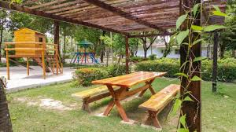
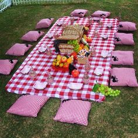
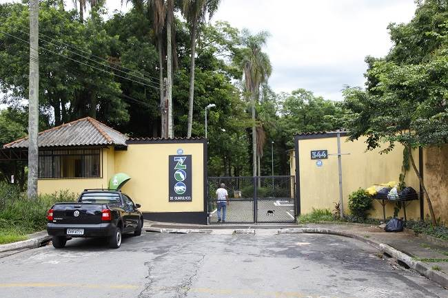
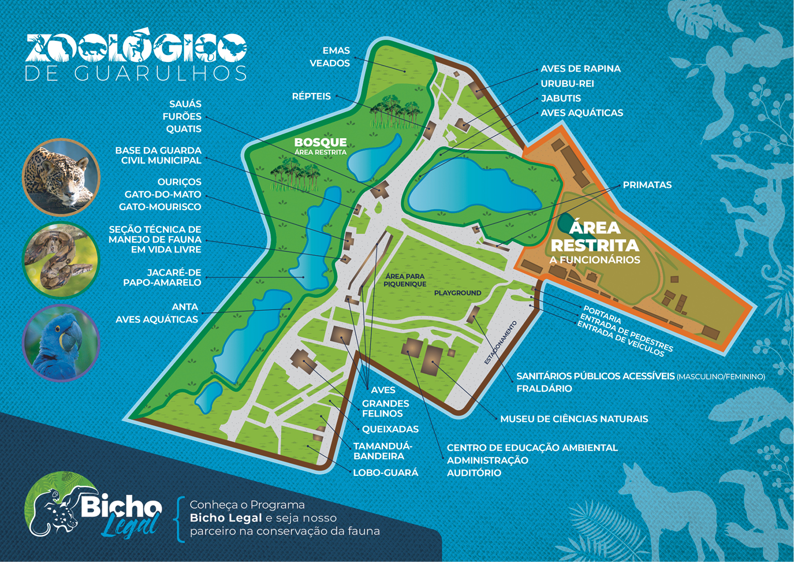

O Zoológico de Guarulhos é um espaço dedicado à preservação e educação ambiental, onde famílias e visitantes podem conhecer mais sobre a fauna do Brasil e do mundo.
O Zoológico Municipal de Guarulhos, criado em 1981, mantém cerca de 400 animais de 100 diferentes espécies, priorizando a fauna nacional com 91% das espécies do plantel sendo nativas.
O ZooGuarulhos participa de programas de conservação de espécies ameaçadas, bem-estar animal, realiza pesquisas científicas e atividades de educação para conservação da biodiversidade. Os animais recebem cuidados constantes, tanto preventivos como curativos, por uma equipe de biólogos, veterinários e tratadores, incumbidos na manutenção de sua saúde e bem estar.
Os répteis são animais de sangue frio, com pele coberta por escamas e geralmente vivem em ambientes secos ou em agua.
Eventos
Fique por dentro dos nossos eventos educacionais e visitas guiadas.
Passeio e piquenique


O Zoo possui uma área de mata e lagos que atraem muitas espécies de aves de vida livre, que podem ser observadas e fotografadas facilmente, tornando o passeio ainda mais agradável.
Também é possível encontrar outros animais. A diretora do Zoo recomenda que não coloque a mão nos animais.
Infraestrutura
Nosso zoológico possui áreas modernas e confortáveis para os animais e visitantes.


Localização
Estamos localizados no coração de Guarulhos. Veja como nos encontrar!